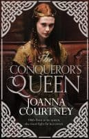

The Girlie Side of the Normans…
Me seeking out the softer side of Duke William - where better to start than in a nice French restaurant!
Searching for the girlie side of the Normans....
The Normans don’t get a great press in history. They generally go down as Vikings without the sex appeal – dour, straight-laced, humourless warriors who liked to go about nicking other people’s countries. Here in the UK they do particularly badly because of the terrible ‘harrowing of the north’ after the conquest in which thousands of men, women and children were wiped out in one of the greatest acts of genocide in known history. The Normans reputation is perhaps, then, fair…
But is it?

My novel The Conqueror’s Queen is the third in my series The Queens of the Conquest about the wives of the men fighting to be King of England in 1066. When writing the first two books from the Saxon and Viking perspectives I happily embraced the idea of the Normans as the ‘baddies’. When I came to write from their point of view, however, I had to talk myself into looking at things from the other side of the story – which is always an interesting place to be. And so it proved.I write from a female perspective and am therefore focused on domestic intrigue, human motivation, and political twists and turns, rather than the flesh and blood of the battlefield. I am not suggesting that the women back then (or now) were necessarily less ruthless or vicious than their male counterparts – indeed there is a fabulous woman called Mabel de Belleme whose reputation as a heartless poisoner proves this instantly wrong – but simply that women operated on their estates and at court, rather than with a sword in their hands. What I wanted to research therefore was why the Normans acted in such apparently dark ways. And there are many very sound reasons.
Me dwarfed by the huge towers guarding the entrance to the magnificent castle at Caen.
Normandy was a fairly new province in the mid-eleventh century, being only a little over a hundred years old. William was only the seventh duke and was still having to fight to establish and confirm his borders. Plus, William became duke aged only seven when his charismatic father died on pilgrimage. As a child and a bastard-born one at that, his rule was not readily accepted. There were plenty of cousins apparently concerned for the duchy in his control and - more to the point - keen to assert their own claim in his place. As a result there were endless rebellions throughout his early years of rule and stone walls (something Normans became famous for when they introduced castles to England) grew higher.
Inevitably in this warlike climate, the more cultural and domestic sides of life seem to have been neglected. When Mathilda of Flanders arrived to marry William in 1050 I suspect she did not find a place that was terribly congenial for women, especially in contrast to the far more peaceful and sophisticated court she’d grown up in, in Bruges. Mathilda and William’s long reign, however, changed all that.
Mathilda's Abbey Aux Dames in Caen
William successfully put down all rebellions and gradually stability became the norm in Normandy. As a result the ducal pair were able to spearhead a huge programme of church-building which included their own beautiful Abbey aux Hommes and Abbey aux Dames in Caen. From this grand starting point they built Caen up into a hugely prosperous city and they also developed already flourishing Rouen. Bayeux, too, became rich and beautiful under the patronage of William’s extravagant half-brother Bishop Odo and it is safe to say that in the fourteen years between Mathilda marrying William and the invasion of England, Normandy was transformed into a far more stable, prosperous and elegant duchy than it had been before. It was this stability that enabled them, in 1066, to turn their eyes over the narrow sea…
Was William wrong to invade? He did not believe so and the more I researched his story the more I began to see it from his point of view. He was promised the throne by King Edward in Christmas 1051 when the Godwinsons (Harold’s family) were in exile. Most people, King Edward included, may have conveniently forgotten about that promise when the Godwinsons came back into power at court but William never did. It was why, when Harold visited Normandy in 1064, he forced him to swear an oath to uphold him as the next king.
The papal banner conferred the blessing of the church on all who rode with Duke William.
William genuinely believed the English throne was his right and he wasn’t alone. When Harold was ‘treacherously’ declared king in January 1066 William sent straight to the Pope to denounce Harold’s reign – and the Pope did so. William marched on England beneath a papal banner offering full benediction for his invasion and whilst that may have been a handy political tool, it was also an unequivocal statement of William’s right to invade from the highest Godly authority on earth. It helped him attract soldiers from all over Northern Europe and undoubtedly shored up his own belief in his cause. God, in William’s eyes, wanted William to win – and God made sure that he did. We might sneer at that now but back then it was a very serious matter.
William, I believe, was a hard man but a straightforward and perhaps surprisingly loving one – at least in private. Of the three men fighting to be king of England in 1066 he was the only one who was faithful to his wife. A great man was more or less expected to have mistresses in those times but William never did. This may have been as a result of his Bastardy taint or may just have been his own inclination but it was remarkable enough for contemporaries to comment on it.
He was also very devoted to his mother, Herleva, and persistently promoted her ‘lowly’ family to high office. He was a man who prized loyalty, who worked hard to surround himself with faithful servants, and who rewarded them well for their devotion. He was not, perhaps, a lovable man, but looking at the 1066 story from his side enabled me to see that he was an earnest one who was driven by duty and a genuine desire to create a better world for his subjects.
And that is what he wanted for England too – but England would not play ball. The harrowing of the north was a truly terrible act but when you look at it through the eyes of a man who had longed to be king for many years, who was desperate to be a good one, and who had spent his youth fighting off endless rebellions by people who wouldn’t trust him to do his job, it can perhaps been seen less as a cruel act than as a desperate one.
Call me girlie if you wish, but I firmly believe that all William wanted to do was be a good king. It is perhaps as much his tragedy as ours that history didn’t quite work out that way.